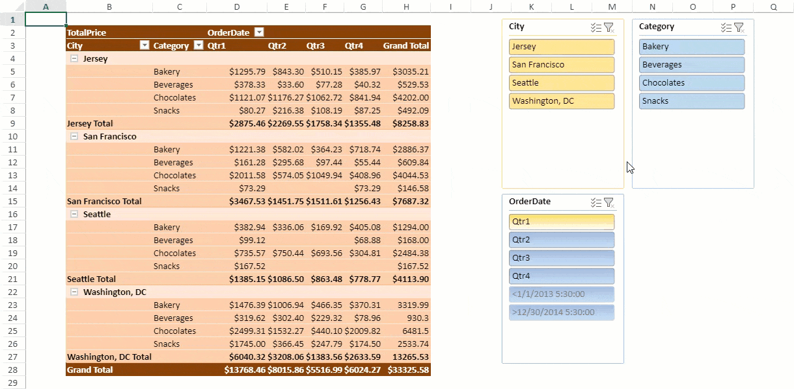
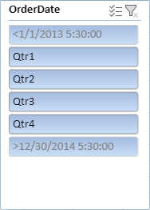
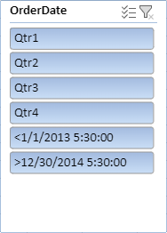
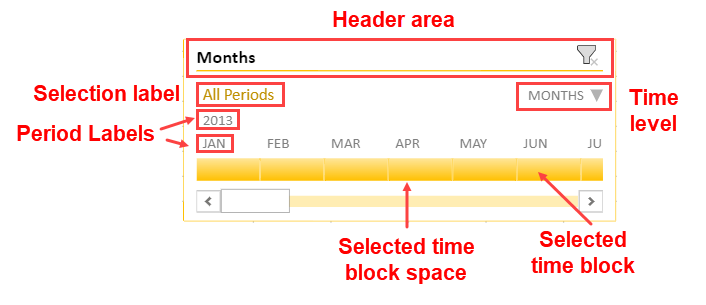
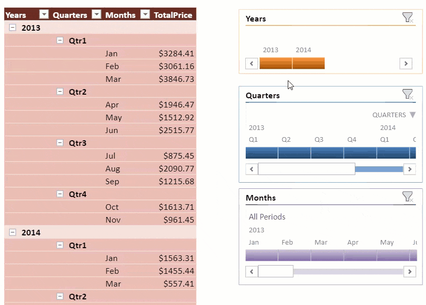

SpreadJS provides a slicer that enables filtering a pivot table with a single click. You can filter an aggregate target by connecting multiple pivot tables using a slicer. It can filter a pivot table's data using manual filters. It offers a user friendly interface, enabling you to manage the filter state of row and column fields of your pivot table efficiently.
The PivotTableItemSlicer class provides various slicer-related methods to work with the pivot table slicer.

The following code sample shows how to add a pivot table slicer using the SlicerCollection.add method. The SlicerType should be set to "pivotTable".
| JavaScript |
Copy Code
|
|---|---|
$(document).ready(function () { // initializing Spread spread = new GC.Spread.Sheets.Workbook(document.getElementById('ss'), { sheetCount: 2 }); spread.options.allowDynamicArray = true; spread.suspendPaint(); // get sheets pivotLayoutSheet = spread.getSheet(0); dataSourceSheet = spread.getSheet(1); // Hide gridlines pivotLayoutSheet.options.gridline = { showVerticalGridline: false, showHorizontalGridline: false }; // set sheet name pivotLayoutSheet.name("PivotLayout"); dataSourceSheet.name("DataSource"); // set row count dataSourceSheet.setRowCount(245); // set datasource dataSourceSheet.setArray(0, 0, pivotDB_UseCase); // add table to dataSourceSheet dataSourceSheet.tables.add('tableSales', 0, 0, 245, 8); // initialize pivottable var pt = initPivotTable(pivotLayoutSheet); pivotLayoutSheet.setColumnCount(200); initSlicer(pivotLayoutSheet, pt); // auto fit columns in both the sheets autoFit(pivotLayoutSheet); autoFit(dataSourceSheet); spread.resumePaint(); }); function initPivotTable(sheet) { myPivotTable = sheet.pivotTables.add("pivotTable", "tableSales", 1, 1, GC.Spread.Pivot.PivotTableLayoutType.outline, GC.Spread.Pivot.PivotTableThemes.dark3); myPivotTable.suspendLayout(); myPivotTable.add("City", "City", GC.Spread.Pivot.PivotTableFieldType.rowField); myPivotTable.add("Category", "Category", GC.Spread.Pivot.PivotTableFieldType.rowField); myPivotTable.add("OrderDate", "OrderDate", GC.Spread.Pivot.PivotTableFieldType.columnField); let groupInfo = { originFieldName: "OrderDate", dateGroups: [ { by: GC.Pivot.DateGroupType.quarters } ] }; myPivotTable.group(groupInfo); myPivotTable.add("TotalPrice", "TotalPrice", GC.Spread.Pivot.PivotTableFieldType.valueField, GC.Pivot.SubtotalType.sum); formatValueField(myPivotTable); myPivotTable.resumeLayout(); myPivotTable.autoFitColumn(); return myPivotTable; } function initSlicer(sheet, pt) { slicer_City = sheet.slicers.add("slicer_City", pt.name(), "City", GC.Spread.Sheets.Slicers.SlicerStyles.light4(), GC.Spread.Sheets.Slicers.SlicerType.pivotTable); slicer_City.position(new GC.Spread.Sheets.Point(1020, 10)); slicer_Category = sheet.slicers.add("slicer_Category", pt.name(), "Category", GC.Spread.Sheets.Slicers.SlicerStyles.light1(), GC.Spread.Sheets.Slicers.SlicerType.pivotTable) slicer_Category.position(new GC.Spread.Sheets.Point(1220, 10)); slicer_Date = sheet.slicers.add("slicer_Date", pt.name(), "OrderDate", GC.Spread.Sheets.Slicers.SlicerStyles.other2(), GC.Spread.Sheets.Slicers.SlicerType.pivotTable); slicer_Date.position(new GC.Spread.Sheets.Point(1020, 280)); } |
|
You can sort items in a pivot table slicer along with filtering. The following options are available in the Slicer settings dialog box:
For example: Order dates like <1/1/2013 5:30:00 and >12/30/2014 5:30:00 are sorted by the sort state.

For example: When order dates like <1/1/2013 5:30:00 and >12/30/2014 5:30:00 do not include any data, they are still shown in the list.

Default Sort values are "Hide items with no data" and "Show Items with no data last". The slicer items are divided into two-parts and each part is sorted in the ascending or descending order.
The following code sample defines different sorting or filtering functions.
| JavaScript |
Copy Code
|
|---|---|
function setMultiSelectFalseForSlicerCity() { // set MultiSelect to True slicer_City.multiSelect(true); } function setSortStateForSlicerCity() { // set sort state to descending slicer_City.sortState(GC.Spread.Sheets.SortState.descending); } function showNoDataItem() { myPivotTable.updateSource(); // to check this delete City "Jersey"( or any one city from DataSource and click this button- on clicking this button, PT will be updated first) slicer_City.showNoDataItems(false); } function visuallyNoDataItems() { myPivotTable.updateSource(); slicer_Date.visuallyNoDataItems(false); } function showNoDataItemsInLast() { slicer_Date.showNoDataItemsInLast(false); } |
|
You can establish a connection between a slicer and the pivot table using the PivotTableItemSlicer.connectPivotTable method. The connection is controlled by either side as both slicer and pivot table can connect or disconnect from one another. If the slicer disconnects with the pivot table, its filter action does not affect the pivot table and the same follows in the slicer.
The following code sample shows how to disconnect a connection.
| JavaScript |
Copy Code
|
|---|---|
function disconnectSlicerWithPivotTable() { // slicer_Date disconnect with PivotTable. slicer_Date.disconnectPivotTable(myPivotTable.name()); slicer_Date.captionName("Disconnected"); } |
|
Timeline slicers are interactive filters that allow you to filter data quickly by date, month, year, and quarter. A visual interface is provided with controllers to help you zoom in and out on any period to view and filter the pivot data.

The timeline slicer only works on date fields of a pivot table using a label condition filter. It can be added in a pivot table using the Slicers.add class method. Set PivotTimeline as the slicer type and apply TimelineLevel enumeration options such as years, quarters, months, and dates to specify how to filter the data in a slicer.
The PivotTableTimelineSlicer class provides various methods to customize the slicer UI.
Consider the example where the food sales company selling food and beverage products wants to display the sales data of products across various quarters of a year.
The timeline slicer can help in analyzing the data based on the period as illustrated in the GIF below.

| JavaScript |
Copy Code
|
|---|---|
// Add timeline slicers for year, quarter, month filters var timeline_year = sheet.slicers.add("timeline_year", pt.name(), "OrderDate", GC.Spread.Sheets.Slicers.TimelineStyles.dark6(), GC.Spread.Sheets.Slicers.SlicerType.pivotTimeline); timeline_year.position(new GC.Spread.Sheets.Point(600, 10)); timeline_year.level(GC.Spread.Sheets.Slicers.TimelineLevel.years); timeline_year.showSelectionLabel(false); timeline_year.showTimeLevel(false); timeline_year.showHorizontalScrollbar(false); timeline_year.height(100); timeline_year.captionName("Years"); var timeline_quarter = sheet.slicers.add("timeline_quarter", pt.name(), "OrderDate", GC.Spread.Sheets.Slicers.TimelineStyles.dark1(), GC.Spread.Sheets.Slicers.SlicerType.pivotTimeline); timeline_quarter.position(new GC.Spread.Sheets.Point(600, 130)); timeline_quarter.level(GC.Spread.Sheets.Slicers.TimelineLevel.quarters); timeline_quarter.captionName("Quarters"); timeline_quarter.showSelectionLabel(false); var timeline_month = sheet.slicers.add("timeline_month", pt.name(), "OrderDate", GC.Spread.Sheets.Slicers.TimelineStyles.light4(), GC.Spread.Sheets.Slicers.SlicerType.pivotTimeline); timeline_month.position(new GC.Spread.Sheets.Point(600, 290)); timeline_month.captionName("Months"); timeline_month.showTimeLevel(false); |
|
In the SpreadJS Designer, the following actions can be performed to select pivot table slicer items:
| Parameter (Action + Mode + Key) | Case |
|---|---|
| click + single + none | Selects the clicked item. |
|
click + single + ctrl click + multi + none click + multi + ctrl |
Switches the clicked item's selection status. |
| click + single + shift | Sets the selection range from start point to click item index. Items in the range remains selected, others remains unselected. |
|
click + multi + shift drag + multi + shift |
Sets the selection range from start point to click item index, and sets selection status to true. (Never False) |
| drag + single + none | Sets the dragged items status to true, others to false. |
|
drag + single + ctrl drag + multi + none drag + multi + ctrl |
Switches the dragged item's selection status. |
| drag + single + shift |
Sets the selection range from start point to drag end item index. Items in the range are selected. |